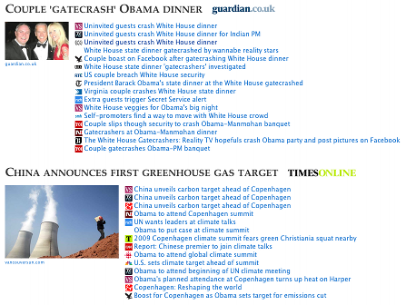

Zeitgeist is Open Source software, free to download and use subject to the terms of the Apache Software Licence, Version 2.0.
Zeitgeist is a Java library for identifying common topics among a set of news articles downloaded from RSS feeds. It groups and ranks related articles. It is loosely based on the non-negative matrix factorisation example presented in chapter 10 of Toby Segaran's Programming Collective Intelligence book.
Zeitgeist includes a basic HTML publisher for generating a page of news headlines, complete with relevant images extracted from the feed articles. Refer to the README file for instructions on how to use Zeitgeist to generate a web page of news topics. The default output looks something like the image on the right (it can be customised with CSS).